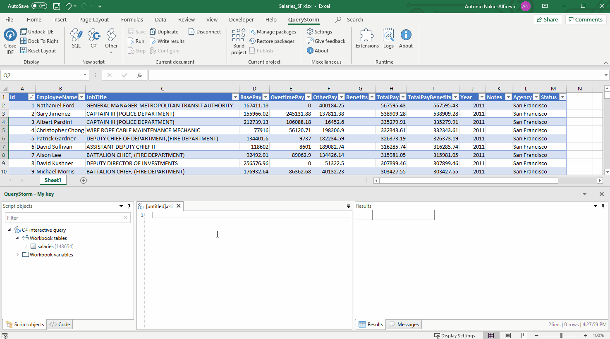
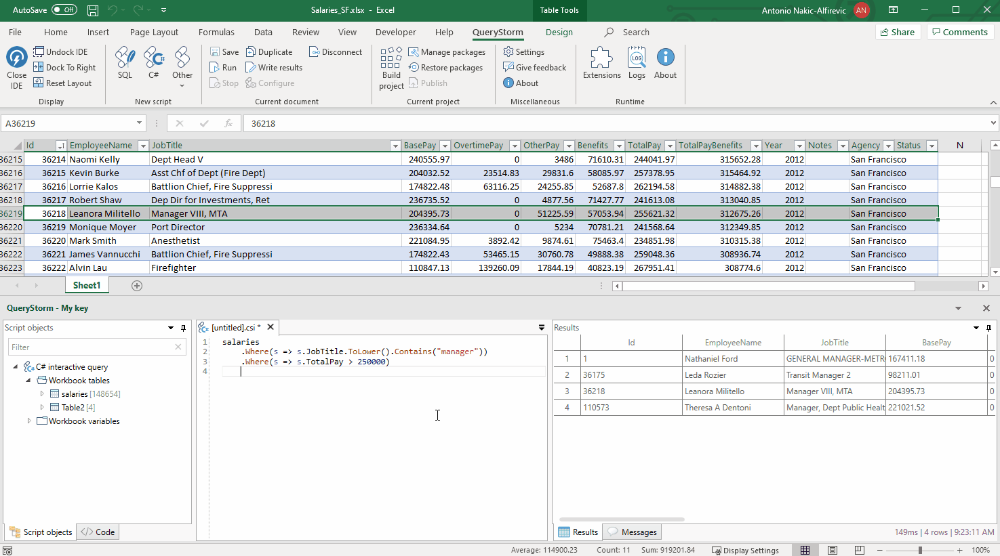
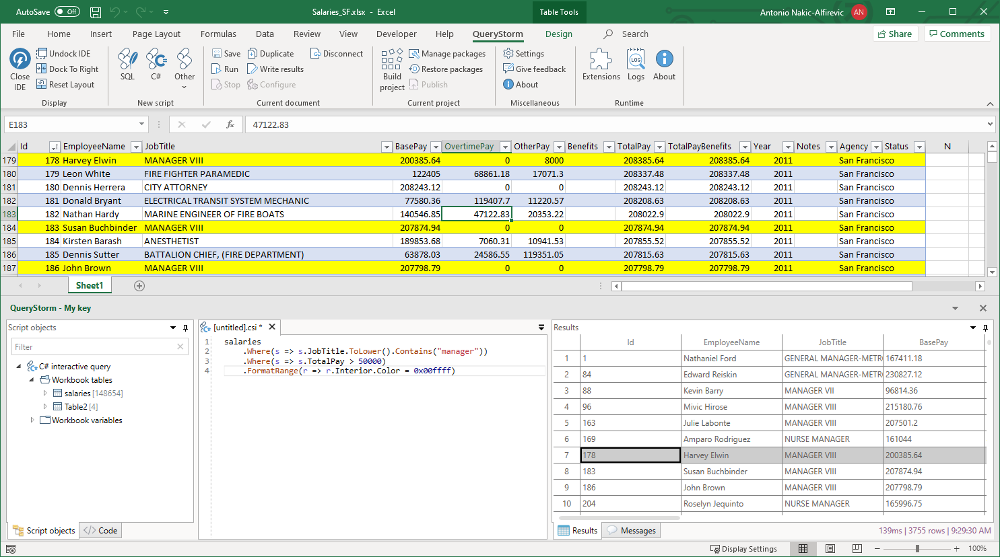

C# scripts
In QueryStorm, user can write C# scripts that interact with the workbook and the data inside it. Scripts can query workbook tables using LINQ, interact with the Excel object model or perform other arbitrary tasks.
Querying tables
One of the main features C# scripts offer is the ability to query tables using LINQ. For each table in the workbook, a variable is provided that gives strongly typed access to the table data.

QueryStorm uses the Reflection.Emit API to dynamically generate classes that represent table rows. This is done on-the-fly, so if you modify Excel tables, QueryStorm will immediately update the generated types.
For example, suppose you have a workbook table named salaries that contains data about people's salaries. You could search for people whose salary is greater than 100,000 like so:
1 | |
C# scripts can also update data in tables. To update a particular row, simply assign new values to its properties. A ForEach extension method is also available to make it easy to update rows in bulk:
1 2 3 | |
Rows can also be deleted individually or in bulk:
1 2 3 4 5 | |
Finally, we can also add rows using AddRow and InsertRow methods:
1 2 3 | |
Column names
Table columns in Excel can have names that are not legal C# identifiers. When row properties are generated, characters that are not allowed in C# identifiers are replaced with underscores.
For example, if the table has a column named Job Title, the corresponding property will be Job_Title:
1 | |
Rows also have an indexer property, that allows reading and writing property values by name. The indexer uses the original column name:
1 | |
Locating rows in Excel
Aside from properties that correspond to columns, rows have an additional __address property that can be used to locate rows in Excel. It returns the Excel address of the row. Double-clicking the address in the results grid selects the row in Excel.

Double-clicking the row header in the results grid will also select the range in Excel, provided the row contains a valid address.
Formatting rows
Aside from locating rows in Excel, the __address property can also be used for selectively formatting rows:
1 2 3 4 | |

C# scripting syntax
The scripting flavor of C# is supported by Roslyn (the C# compiler) and is slightly different from regular C#. Most of the standard C# syntax is valid in scripts, but scripts also allow a more relaxed syntax where you can evaluate expressions, without the ceremony of defining types and methods.
For example, we can return the current date like so:
1 | |
return statement is required:
1 2 3 4 5 6 | |
Referencing dlls
A C# script is hosted inside a project. The project has a module.config file that specifies, among other things, library and NuGet references. To use local dlls or NuGet packages in your C# scripts, simply add them to the host project.
After adding the references to the project, the script needs to disconnect and reconnect to see the changes.
Referencing project code
The script can also see the classes that the containing project exposes. It's important to note that the script code is not compiled along with the project class files. Rather, the script references the project's output dll, so it only sees public types that the project exposes. The project should be built (compiled) before the script can use its types.
As with references, the script should disconnect and reconnect in order to see changes.
Interacting with the workbook object
Each C# script has a variable called ThisProject that references the project that contains it. Workbook projects expose a Workbook property that exposes the workbook COM object.
From there, the user can interact with the workbook via Excel's COM API.
1 2 3 4 | |